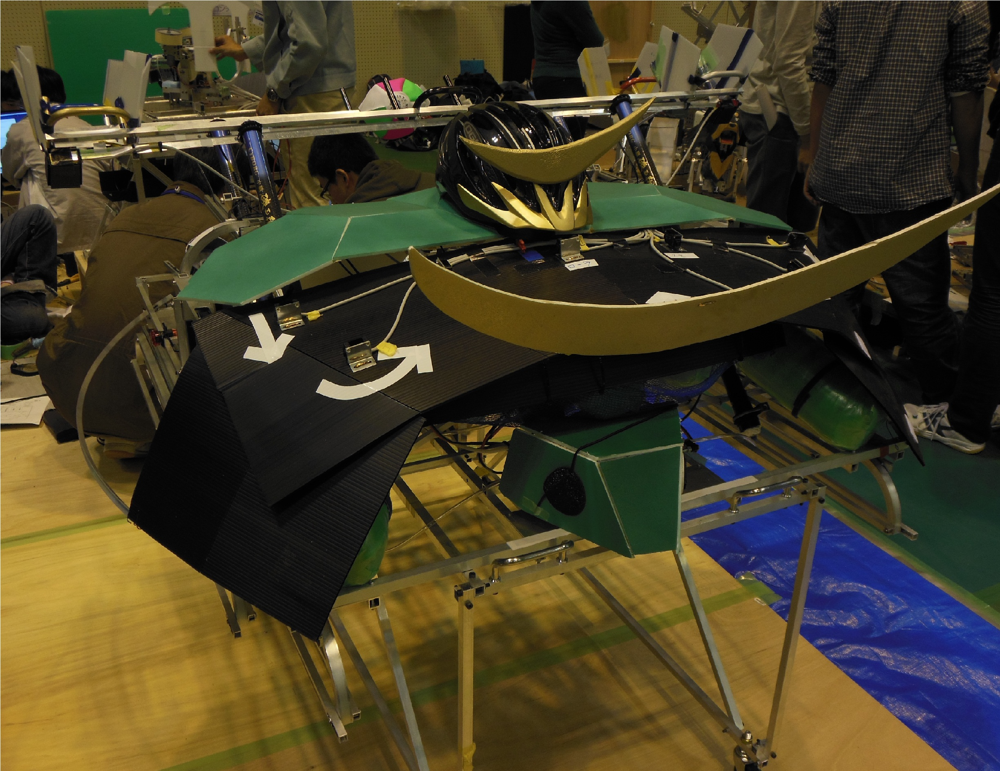

マシン名：CAME正宗

この年の競技は１台のペットロボットが９つのゴールめがけて玉入れを行う「ベスト・ペット」です。
上の画像はペットロボットの「came政宗」です。このマシンの特徴はローラーとタモを組み合わせた射出機構です。
下三段をローラーによる射出で、その他のゴールをタモを伸ばすことで狙います。
初め、すべてのゴールをローラーによる射出で狙っていましたが、
射出の精度が上がらずなかなかうまくいきませんでした。
そこで、射出の精度が良かった下三段以外を確実性の高いタモに変更しました。
その結果射出の精度が上がり、地区大会準優勝、全国大会出場を果たしました。

上の画像は正面からみた「came政宗」です。
「came政宗」のなかにはタモを伸ばすように２本、ローラー射出用に３本、ペットらしい動作用に１本、
合計６本のペットボトルのエアタンクが積まれています。
下の画像は側面から見た「came政宗」です。
歩行機構はチェビシェフリンク機構を使用し、スライドレールと２本の角パイプのてこを利用して反転しています。
動力の伝達にはベルトとプーリーを、モーターはmaxon RE40 を使用しています。